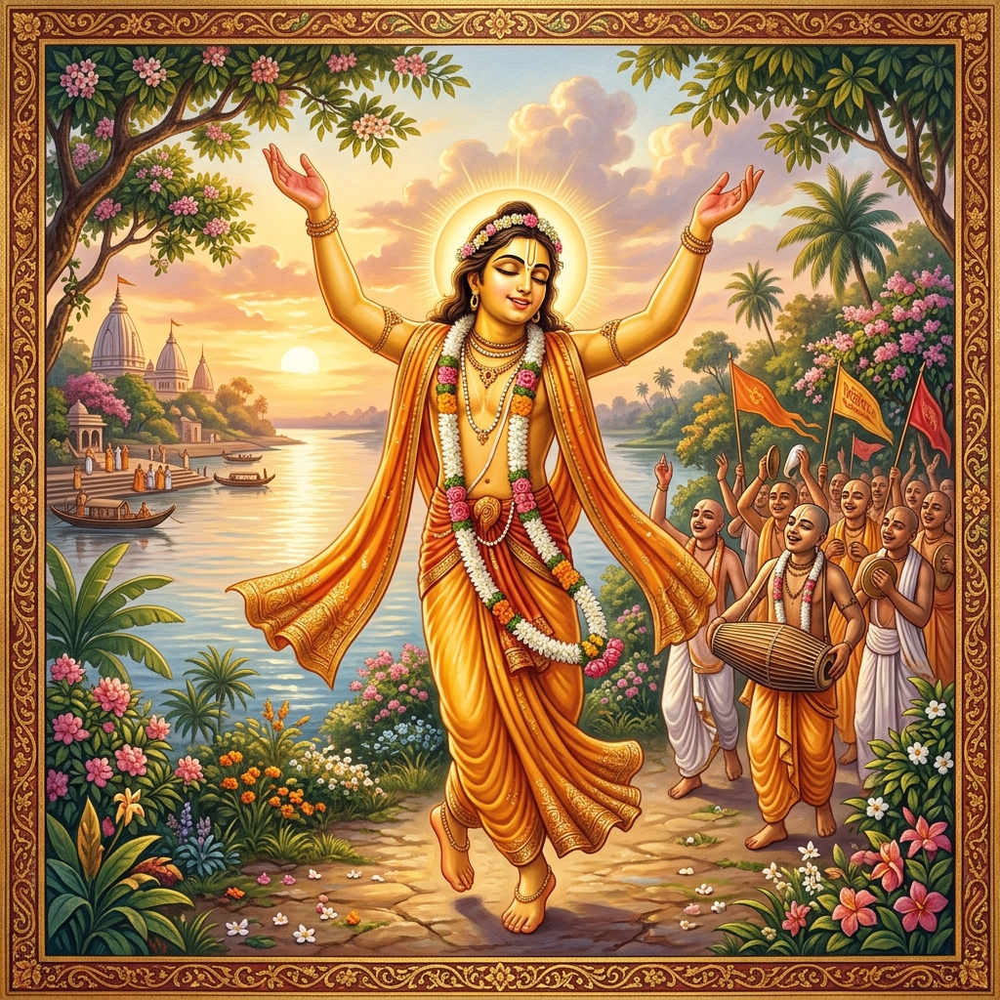

Chaitanya Mahaprabhu is described as the combined form of Sri Sri Radha and Krishna. This account is based on the work of Srila Bhaktivinoda Thakura titled “Sri Chaitanya Mahaprabhu: His Life and Precepts” (1896), later referenced in Teachings of Lord Chaitanya.
श्री चैतन्य महाप्रभु को श्री श्री राधा और कृष्ण के संयुक्त रूप के रूप में वर्णित किया गया है। यह विवरण श्रील भक्तिविनोद ठाकुर के कार्य "श्री चैतन्य महाप्रभु: उनका जीवन और उपदेश" (1896) पर आधारित है, जिसे बाद में "लॉर्ड चैतन्य की शिक्षाएं" में संदर्भित किया गया।
Chaitanya Mahaprabhu was born in Mayapur, in the town of Nadia, on the evening of 23rd Phalguna (18 February 1486 CE). At the time of His birth, a lunar eclipse occurred, and people were chanting “Haribol” while bathing in the Bhagirathi River.
He was named Vishvambhara, while neighbors affectionately called Him Gaurahari due to His golden complexion, and His mother called Him Nimai because He was born near a neem tree.
From childhood, He was charming and widely loved. He began formal education at a young age and quickly mastered Bengali.
चैतन्य महाप्रभु का जन्म नदिया के मायापुर में 23वें फाल्गुन की शाम (18 फरवरी 1486 ईस्वी) को हुआ था। उनके जन्म के समय, चंद्र ग्रहण लगा था, और लोग भागीरथी नदी में स्नान करते हुए "हरिबोल" का जाप कर रहे थे।
उनका नाम विश्वंभर रखा गया था, जबकि पड़ोसी उनके सुनहरे रंग के कारण उन्हें प्यार से गौरहरि कहते थे, और उनकी माँ उन्हें निमाई कहती थीं क्योंकि उनका जन्म नीम के पेड़ के पास हुआ था।
बचपन से ही वे आकर्षक और व्यापक रूप से प्रिय थे। उन्होंने कम उम्र में औपचारिक शिक्षा शुरू की और जल्दी ही बंगाली भाषा में महारत हासिल कर ली।
At around eight years of age, He joined the school of Gangadasa Pandita. Within a few years, He became proficient in:
By the age of ten, He was already considered a capable scholar. Later, He continued self-study using books from His father’s collection.
He eventually became one of the most respected scholars in Nadia, defeating even renowned scholars such as Keshava Misra in debate.
लगभग आठ वर्ष की आयु में, वे गंगादास पंडित के स्कूल में शामिल हो गए। कुछ ही वर्षों में, वे इसमें कुशल हो गए:
दस वर्ष की आयु तक, उन्हें पहले से ही एक सक्षम विद्वान माना जाता था। बाद में, उन्होंने अपने पिता के संग्रह की पुस्तकों का उपयोग करके स्व-अध्ययन जारी रखा।
वे अंततः नदिया के सबसे सम्मानित विद्वानों में से एक बन गए, उन्होंने शास्त्रार्थ में केशव मिश्र जैसे प्रसिद्ध विद्वानों को भी हराया।
He was known not only for scholarship but also for teaching Vaishnavism during His travels.
वे न केवल विद्वत्ता के लिए बल्कि अपनी यात्राओं के दौरान वैष्णववाद सिखाने के लिए भी जाने जाते थे।
At around 16–17 years of age, He traveled to Gaya, where He received spiritual initiation from Ishvara Puri.
After returning to Nadia, a profound transformation occurred:
He started organizing kirtan (devotional singing) gatherings with His followers and inspired many to adopt devotional practices.
लगभग 16-17 वर्ष की आयु में, उन्होंने गया की यात्रा की, जहाँ उन्हें ईश्वर पुरी से आध्यात्मिक दीक्षा प्राप्त हुई।
नदिया लौटने के बाद, एक गहरा परिवर्तन हुआ:
उन्होंने अपने अनुयायियों के साथ कीर्तन (भक्ति गायन) सभाओं का आयोजन शुरू किया और कई लोगों को भक्ति प्रथाओं को अपनाने के लिए प्रेरित किया।
Chaitanya Mahaprabhu actively spread the message of devotion (bhakti):
His influence grew rapidly, attracting both admiration and opposition. Even the local Kazi, initially opposed, was eventually transformed by His spiritual influence.
चैतन्य महाप्रभु ने भक्ति के संदेश को सक्रिय रूप से फैलाया:
उनका प्रभाव तेजी से बढ़ा, जिससे प्रशंसा और विरोध दोनों आकर्षित हुए। यहाँ तक कि स्थानीय काज़ी, जो शुरू में विरोधी थे, अंततः उनके आध्यात्मिक प्रभाव से परिवर्तित हो गए।
At the age of 24, He accepted sannyasa (renounced order) under Keshava Bharati at Katwa.
24 वर्ष की आयु में, उन्होंने कटवा में केशव भारती के अधीन संन्यास स्वीकार किया।
After renunciation, He traveled extensively across India including Bengal, Benares, and Puri.
संन्यास के बाद, उन्होंने बंगाल, बनारस और पुरी सहित पूरे भारत की व्यापक यात्रा की।
He gathered many notable followers, including:
He also sent disciples to Vrindavana to spread devotion and establish spiritual teachings.
उन्होंने कई उल्लेखनीय अनुयायियों को इकट्ठा किया, जिनमें शामिल हैं:
उन्होंने भक्ति फैलाने और आध्यात्मिक शिक्षाओं को स्थापित करने के लिए शिष्यों को वृंदावन भी भेजा।
From around age 31 until His disappearance, He resided in Puri, living a life of devotion, simplicity, and spiritual absorption.
He engaged in kirtan, teaching, and spiritual discussions, maintaining communication with followers across all regions.
लगभग 31 वर्ष की आयु से अपने अंत तक, वे पुरी में रहे, और भक्ति, सादगी और आध्यात्मिक तल्लीनता का जीवन जिया।
वे कीर्तन, शिक्षण और आध्यात्मिक चर्चाओं में लगे रहे, और सभी क्षेत्रों के अनुयायियों के साथ संवाद बनाए रखा।
His teachings emphasized:
He encouraged people to chant the name of Hari and live a life of devotion.
उनकी शिक्षाओं ने इस पर जोर दिया:
उन्होंने लोगों को हरि का नाम जपने और भक्तिपूर्ण जीवन जीने के लिए प्रोत्साहित किया।
Chaitanya Mahaprabhu spent His last years in Puri in deep spiritual practice. He disappeared at the age of 48 during a kirtan at the temple of Tota Gopinatha.
चैतन्य महाप्रभु ने अपने अंतिम वर्ष पुरी में गहन आध्यात्मिक साधना में बिताए। 48 वर्ष की आयु में टोटा गोपीनाथ के मंदिर में एक कीर्तन के दौरान वे अंतर्ध्यान हो गए।
Chaitanya Mahaprabhu’s life reflects a transition from scholarship to deep devotion. Through His teachings, travels, and personal example, He inspired a movement centered on love for Krishna and the practice of devotional chanting.
चैतन्य महाप्रभु का जीवन विद्वत्ता से गहरी भक्ति में परिवर्तन को दर्शाता है। अपनी शिक्षाओं, यात्राओं और व्यक्तिगत उदाहरण के माध्यम से, उन्होंने कृष्ण के प्रति प्रेम और भक्ति जप के अभ्यास पर केंद्रित एक आंदोलन को प्रेरित किया।